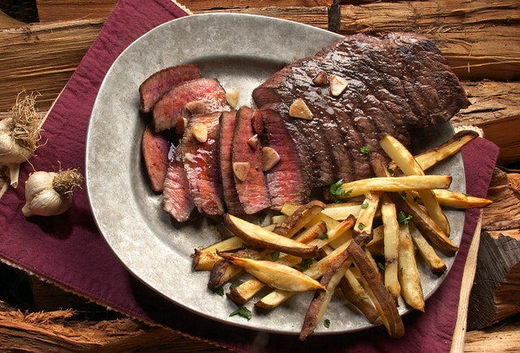

Ribeye Steak & Fries Dinner

Description:
A juicy grass-fed Ribeye tenderloin, grilled to wall to wall perfection with a delicious crispy side of fries.
Ingredients:
- Ribeye tenderloin
- Salt
- Pepper
- Garlic
- Green onion
- Russel potatoes
- Grass-fed butter
Steps:
- Season the Ribeye steak well, making sure to get all the seasoning everywhere.
- Chop up the french fries and let them sit in water.
- Start frying butter with garlic in a cast iron pan.
- Once the garlic aroma starts to spread, toss the ribeye into the pan.
- Fry on high for 7 minutes each side.
- Fry the french frys in a oil fryer.
- Let the steak sit on a wooden plate for a minute, then cut and enjoy!